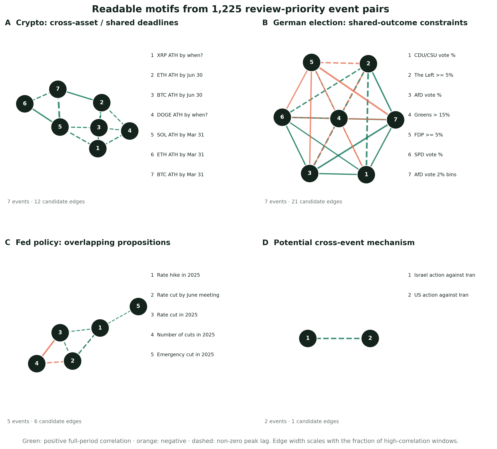
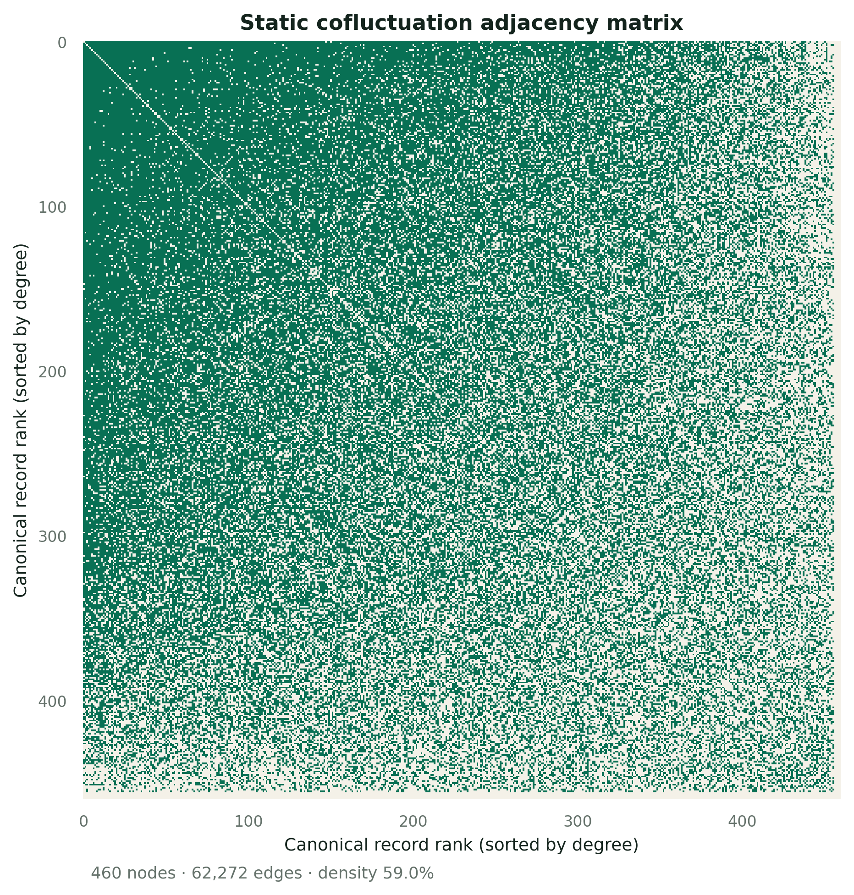
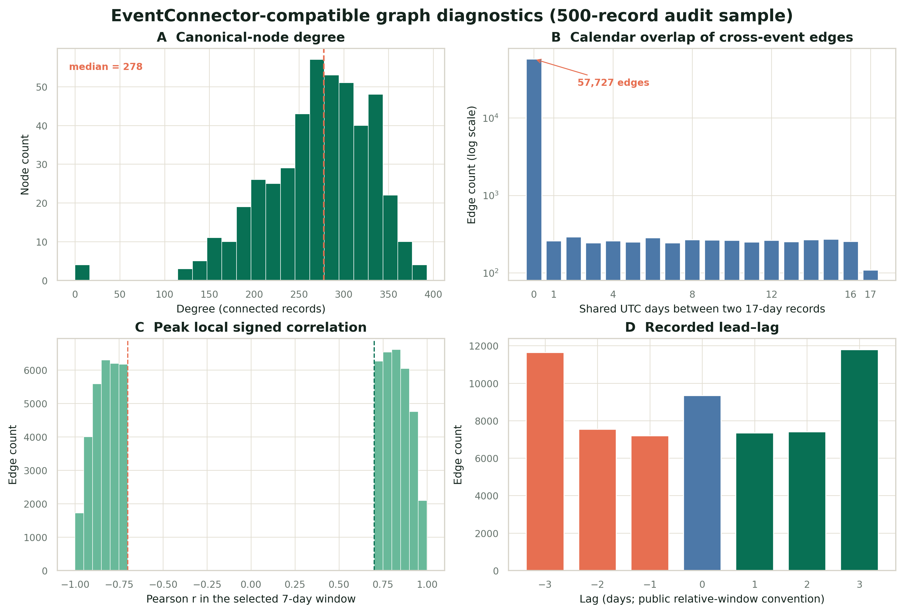
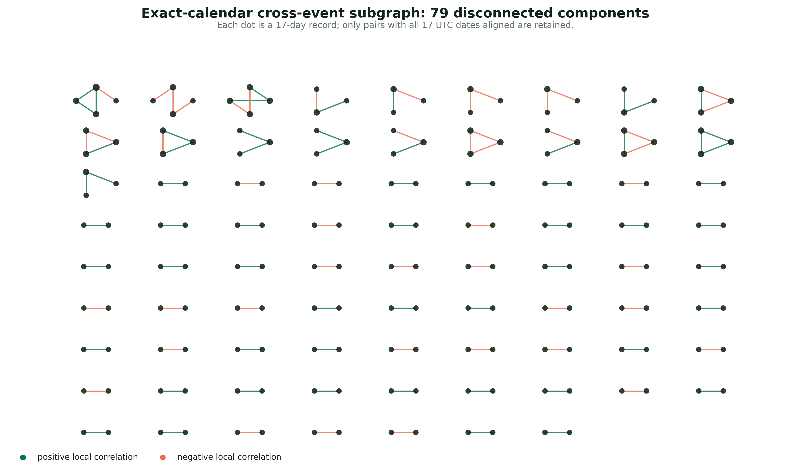
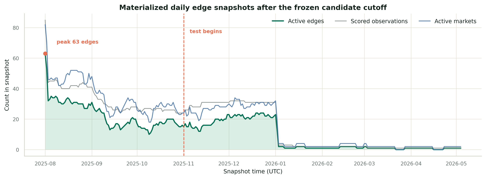

ACTIVITY FEATURES V1 · 2026-09-07
价格之外，加入交易规模与信息新鲜度
1 小时用于主研究，日频对接 EventConnector，15 分钟检查短期领先关系。数据已完成全量验收。
NEW RELEASE
新增过去 7 / 30 日成交规模、相对历史的异常成交量、market / event / 平台成交份额与真实价格年龄。129 个频率×月份分区，259 个 Parquet，约 9.13 GB。
| 频率 | Market 行数 | Event 行数 | 研究用途 |
|---|---|---|---|
| 1h | 30,411,190（约 3,041.12 万） | 11,856,822（约 1,185.68 万） | 主研究与自身活动消融 |
| 1d | 3,734,154（约 373.42 万） | 1,310,285（约 131.03 万） | EventConnector 历史输入 |
| 15m | 41,108,885（约 4,110.89 万） | 18,688,800（约 1,868.88 万） | 短期领先关系检查 |
交易活跃度与异常活动
以固定日历窗口累计现金成交额；异常量与此前 7 日或此前四周相同 UTC 时间槽比较。长历史不足时保留缺失值，基线不包含当前桶。
价格距末笔成交多久？
在桶结束时，用真实末笔成交时间计算年龄。小时价格最多延续一个无成交桶，日频和 15 分钟保留成交桶。排除首尾不完整桶。
保留身份，连接历史活动
365,015 条原样本均配有十步历史活动。按真实可用时刻检查后，1,697 条跨越原切分边界，已标记；严格时间筛选后保留 363,318 条。
完整时段：1h / 15m 为 [2022-11-21 20:00, 2026-05-04 16:00) UTC；日频为 [2022-11-22 00:00, 2026-05-04 00:00) UTC。原始 bars 规模保留原口径，活动特征因排除不完整桶而略少。
RESEARCH SCOPE
成交量衡量交易活跃度，不能直接等同于资金存量、流动性或情绪。数据及 9 项特征测试已验收；活动信息是否改善预测、来源市场是否有增量信息，仍需后续实验检验。
GRAPH CONNECTION
按 sample_id 连接十步历史活动，保留历史完整性与缺失标记，并显式扩展模型输入；伴随文件不导出未来目标活动。旧日标签对应的整日状态在次日零点才完整可用。图快照连接活动时须满足 available_from ≤ snapshot_time；已有相关候选仍需独立的预测增量验证。
FORECAST DATA · 2026-09-09
从量价数据到模型输入：过去 10 天，预测未来 7 天
训练、验证、测试数据与完整 prompt 已准备；当前先做历史价格预测，尚未得到 LLM 的正式比较结果。
| 划分 | 完整样本 | 固定试跑样本 |
|---|---|---|
| Train | 212,393 | 200 |
| Validation | 13,831 | 200 |
| Test | 137,094 | 1,000 |
10 天 × 11 个量价特征
盘口问题与结果方向，加上价格、日成交额与笔数、7/30 日成交规模、相对与异常量、三类成交份额和真实价格年龄。缺失值在 prompt 中写作 MISSING。
七个未来价格
同一盘口未来七个完整 UTC 日的价格，范围 0–1。标签单独保存，只用于训练 loss 或预测后的评分。MSE 为主要指标，MAE 补充评价。
每条完整 prompt 已落盘
每个划分分别保存结构化输入、未来标签和完整 full prompt。prompt 提供编码版与要求 JSON 回答的 training-free 版；同一个模板生成，逐条核对一致。大文件目前位于本地工作区。
PROGRESS
T-M 指标与 loss、T1 全量导出已完成。T2 已固定随机清单，分层覆盖分析待补。T3 已准备训练/测试脚本，并完成 200 条 validation 的 persistence 对照（MSE 0.007323，MAE 0.04549）；Luna 与实际预训练 LLM 预测头实验尚未运行。T0 自然语言定位及 T4–T7 检索、Agent、增量验证仍待推进。
剔除 1,697 条跨时间边界窗口后，共 363,318 条；三个划分的 parent event ID 无交集，但并不保证语义事件族独立。固定样本未按未来涨跌筛选。历史回测仍可能受模型预训练记忆影响。全量文件尚未上传 Hugging Face，现有活动特征下载入口保留原含义。
01 / DATA PIPELINE
现在的数据与图是怎样形成的？
从逐笔成交到训练窗口，再分成“复现公开代码行为”和“保留真实 UTC 时间证据”两条支路。
DIRECT ANSWER
当前节点不是唯一事件，而是一个 market × as_of_time 的 17 日训练 record；当前边不是关系真值，而是两个 records 在相对位置上的形状相似或 DTW 接近。
763,126,566 笔（约 7.63 亿）
1m / 15m / 1h observed bars
过去 10 日 → 未来 7 日
365,015 条 dense+cold 窗口
相对位置静态检索图
用全轨迹相关合并 records，以任一 7 点窗口的 |r|≥0.70 建共波动边，对未连接 pair 用 DTW 补边。复现公开实现，但不要求两条轨迹发生在同一日期。
带真实日期的候选证据
按共同 UTC 日计算相关，保存峰值窗口起止、有效成交日、lag 和高相关窗口比例；1,225 个优先候选在训练截止点冻结。
Parquet 分区的日频动态图
每日 active 与 inactive observations 按 snapshot_date 分区保存；DuckDB 可直接查询 G(t)。第一版保留完整观测，尚未转换为 delta。
02 / EVENT-LEVEL SUBSET
当前有事件之间的高相关子集吗？
有，但准确名称是“高阈值、待人工审核的 event-pair 候选子集”，不是已经确认的关系数据集。
DIRECT ANSWER
high_confidence_event_pairs 包含 1,225 个去除反向重复的 event pairs，涉及 1,132 个 events、286 个连通分量。它们同时通过语义、真实 UTC 轨迹和成交覆盖门槛，但当前 1,225 对仍全部是 unreviewed。

加密资产共同风险因子
BTC、ETH、SOL、XRP 与 DOGE 的同期限命题形成子图。它适合作为检索信号，但不能仅凭相关图判断哪个资产影响另一个。
同一选举结果的机械约束
德国各党得票区间共享同一选举结果，正负边很密集。这里多数是联合约束，不是独立事件传导。
货币政策命题重叠
加息、降息、降息次数与特定会议存在包含、互斥或期限关系，需要先统一命题和 deadline。
可能的跨事件机制
“美国对伊朗行动”与“以色列对伊朗行动”具有共同信息环境和潜在方向，是值得进入审核及 P3 的候选，而非已证实传导。
| 候选 pair | 共同日 | 全期 r | 高相关窗口 | 峰值 lag | 审核解释 |
|---|---|---|---|---|---|
| TikTok 2025 禁令 ↔ 5 月前美国禁令 | 21 | +0.993 | 14 / 15 | 0 日 | 相邻 deadline / 命题嵌套 |
| Q2 GDP 增长 >2% ↔ Q2 GDP 负增长 | 92 | −0.913 | 23 / 86 | 3 日 | 同一结果变量的阈值约束 |
| BTC 3 月前创新高 ↔ ETH 3 月前创新高 | 71 | +0.923 | 21 / 65 | ETH 领先 3 日 | 共同 crypto 风险因子 |
| 以色列对伊朗行动 ↔ 美国对伊朗行动 | 31 | +0.847 | 11 / 25 | 美国领先 1 日 | 潜在机制，优先进入 P3 |
为什么还不能叫“已建立关系”？ 当前门槛是启发式筛选，不是校准后的关系概率；还没有完成逐对人工审核、多重检验、公共因子控制、反向边和 rolling out-of-sample 增量验证。
03 / STATIC GRAPH
为什么原来的邻接矩阵看不出事件关系？
直接绘制 6.32 万条边会成为不可读的毛线球；邻接矩阵和度分布更能揭示结构。
核心观察
460 个 canonical records 上有 62,272 条共波动边，图密度达到 59.0%，节点中位度为 277.5。这不是稀疏的“事件关系网络”，而是一个非常稠密的训练窗口检索图。


训练窗口 record
一个节点对应一条 17 点轨迹，而不是一个唯一 event_id。同一 market 随不同 as_of_time 可产生多个节点。
局部形状相关
只要某个相对 7 点窗口达到阈值就建边；边的 weight 是峰值，不表示整个共同生命周期都相关。
时间伸缩后的相似
对尚未连接的 pair 计算 Dynamic Time Warping 距离。它补充形状检索，不产生方向或因果含义。
04 / CALENDAR AUDIT
时间问题在图中有多严重？
这里区分“数组位置对齐”与“真实日期对齐”。两者都可用于算法实验，但支持的研究结论不同。

德国选举得票区间 ↔ Kevin Durant 得分王
两条轨迹日期完全一致，但语义无关。这个例子说明：即使通过严格日历对齐，短窗口高相关仍可能来自共同趋势、幅度尺度或偶然共振。
Musk 月末首富 ↔ 俄罗斯袭击波兰
同日期的一升一降产生强负相关，却没有明确机制。负相关不能直接翻译成“反向影响”。
日历审计证明当前静态图大量连接并非同期关系；它没有证明剩下的 109 条边是真实关系。后者仍需语义审核、公共因子控制和 P3 时间外预测增量验证。
05 / TEMPORAL SNAPSHOT
怎样把图变成可按时间查询的结构？
Snapshot 是某个时点可合法使用的逻辑子图。当前规模直接保存完整日切片，更易查询和审计。

一条永久边掩盖有效时间
AB
(A, B, corr=0.91)
→
边带证据时间，查询时生成 G(t)
t₁
AB
activet₂
AB
activet₃
AB
inactive
CURRENT STORAGE
Hive 分区 Parquet + DuckDB
物理层按 edge_snapshots/snapshot_date=YYYY-MM-DD/ 保存 active 与 inactive observations。模型查询时同时检查 available_from ≤ 查询时点；无需先导入专门数据库。
{
"snapshot_time": "2025-08-01T00:00:00Z",
"source_market_id": "A",
"target_market_id": "B",
"evidence_start": "2025-07-15T00:00:00Z",
"evidence_end": "2025-07-31T00:00:00Z",
"available_from": "2025-08-01T00:00:00Z",
"signed_correlation": 0.91,
"abs_correlation": 0.91,
"lag": 1,
"actual_trade_days": 5,
"support_window_count": 4,
"relation_method": "calendar_17d_peak7d_pearson_lag3_v1",
"active": true
}
evidence_start/end相关统计实际使用的 17 个完整 UTC 日。
available_from完整日终证据首次可被模型合法使用的时间。
snapshot_time该 edge 所属的图切片；v1 与 available_from 相等。
QUERY DIRECTLY
不导入数据库，直接查询 Parquet
所有 277 个日期都有分区；过滤 active=true 即得到当日逻辑子图。
SELECT * FROM read_parquet( 'edge_snapshots/snapshot_date=*/part.parquet', hive_partitioning=true ) WHERE snapshot_date = DATE '2025-08-01' AND available_from <= TIMESTAMPTZ '2025-08-01 00:00:00+00' AND active;
时间边界：1,225 对候选在 2025-07-31 23:59:59 UTC 才冻结，所以 v1 不把它们回填到训练期；否则会产生候选选择泄漏。277 表示日期切片全部生成，不表示每个日期都含 1,225 条稠密边；每条 observation 对应 event pair 的代表 market pair。存储边界：当前 payload 仅约 3.1 MB，delta 编码留待规模扩大后再做。在 Hugging Face 查看数据。
06 / CURRENT SCHEMA
当前轨迹和边具体存什么？
四层对象分开保存，避免把训练 record、静态检索边、研究候选和时态边观测混成一种“事件关系”。
EventConnector-compatible JSONL
{
"sample_id": "A_D-…",
"market_id": "…",
"event_id": "…",
"question": "…",
"as_of_time": "…",
"prices": [
{"t": "day 1", "p": 0.42},
… 17 continuous UTC days …
]
}
前 10 点是历史，后 7 点是目标；p 表示 p_answer1，不必然是 Yes。
graph_edges.parquet
{
"source_sample_id": "…",
"target_sample_id": "…",
"source_as_of_time": "…",
"target_as_of_time": "…",
"calendar_overlap_days": 0,
"peak_local_signed_corr": 1.0,
"lag": -2,
"edge_type": "cofluctuation"
}
已保留两端时间与日期重合诊断，但没有 edge 的 valid_from/valid_to。
candidates_scored.parquet
{
"source_event_id": "…",
"target_event_id": "…",
"shared_day_count": 21,
"peak_window_start_utc": "…",
"peak_window_end_utc": "…",
"high_corr_window_fraction": 0.93,
"peak_lag_days": 0,
"research_candidate": true
}
43,971 条 P2 seed 中有 1,225 个优先 event pairs；仍是待审核候选，不是训练标签。
snapshot_date=*/part.parquet
{
"snapshot_time": "2025-08-01T00:00:00Z",
"source_market_id": "…",
"target_market_id": "…",
"evidence_start": "2025-07-15T00:00:00Z",
"evidence_end": "2025-07-31T00:00:00Z",
"available_from": "2025-08-01T00:00:00Z",
"signed_correlation": 0.91,
"abs_correlation": 0.91,
"lag": 1,
"actual_trade_days": 5,
"support_window_count": 4,
"relation_method": "…",
"active": true
}
5,162 条时态观测保留三种时间语义；3,463 条 active 行构成 277 个日期中的逻辑子图。
当前对象支持的用途不支持的结论
静态 STG
复现代码、检索实验、失败模式分析
事件在所有时期持续相关
日历对齐边
同期候选、短窗口人工审核
方向稳定、存在预测增量或因果
时态 edge observations
按预测时点查询相关候选子图、开展检索实验
单边具有稳定预测增量或因果关系